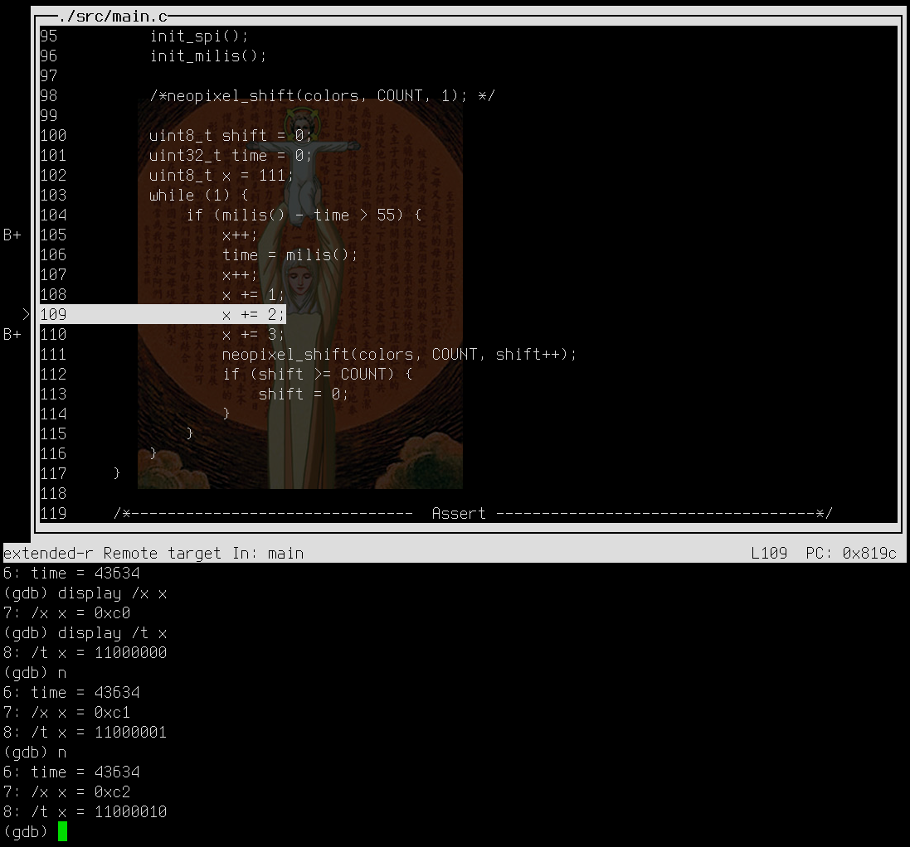

Vývojové nástroje jsou asi největší slabinou celého ekosystému STM8. Výrobce
dodává vývojové prostředí STVD
(návod zde),
které je sice dostačující, ale staré a již nevyvíjené. Navíc se občas stane, že
na nějakém PC je problém to rozjet. Kompilátor Cosmic sice funguje, ale ta neustálá
kontrola licence, je fakt opruz; … a jeho chybová hlášení mi taky
nepřišla úplně srozumitelná.
A to jsem ještě nezmínil to hlavní: Na Linuxu to nejede!
Takže, co s tím? Použijeme OpenSource nástroje! Co je potřeba?
- Vývojové prostředí
- Kompilátor
- Programátor/Flasher – software, kterým program do čipu nahraju
- Debuger
Když jsem to celé tvořil hodně mi pomohla tato stránka, tak se tam můžete mrknout: https://github.com/hbendalibraham/stm8_started.
Předpřipravená instalace¶
Připravil jsem pro vás výukovou image systému Devuan Linux, kde je vše již nastaveno a nainstalováno. Nemusíte tedy vše ručně instalovat, stačí nainstalovat VirtualBox – včetně Extension Pack a stáhnout si image: Devuan-X-MIT.ova. I tak si ale přečtěte následující text ať víte, jak to máte použít.
https://mamut.spseol.cz/nozka/public/virtual-img-ova/Devuan-X+MIT.ova
Rychlá instalace¶
Dále v textu jsou popsány detaily. Zde je na jednom místě sepsána rychlá instalace nástrojů, které budete potřebovat.
Windows¶
Nejprve nainstalujte Chocolatye. Tedy:
Pomocí Win+X a spustíte PowerShell jako Administrátor
a zadáte příkaz:
Set-ExecutionPolicy Bypass -Scope Process -Force; [System.Net.ServicePointManager]::SecurityProtocol = [System.Net.ServicePointManager]::SecurityProtocol -bor 3072; iex ((New-Object System.Net.WebClient).DownloadString('https://community.chocolatey.org/install.ps1'))
Potom doinstalujte další potřebné nástroje:
choco install vscodium git make mingw openocd
Pokud ještě nemáte Python, můžete i Python:
choco install python
Instalace SDCC se musí naklikat. Instalátor stáhnete zde: https://sourceforge.net/projects/sdcc/files/sdcc-win64/
Pro flashování se na Windows používá STVP. Pokud už jste nainstalovali STVD máte už STVP nainstalováno, protože je součástí jeho instalace. Je možné ho naistalovat i zvlášť – bez STVD.
Linux¶
sudo apt install sdcc sdcc-libraries git make openocd
Toolchain¶
Připravil jsem startovací strom zdrojových kódů a Makefile.
https://gitlab.com/spseol/mit-no/STM8S-toolchain
Tento toolchain se dá použít jak v Linuxu tak ve Windows. Stačí nainstalovat Make, Bash a/také Git.
Instalace¶
V Linuxu zavoláte něco jako:
apt install make git
Ve Windows je nejsnadnější instalovat pomocí Chocolatye:
choco install make git
choco install openocd
choco install python
Bash je součásti balíčku Git. Ve Windows ještě stojí za to malinko si Bash připravit,
aby fungoval dobře s make. Proto si si nakopírujte konfiguraci s .make/bashrc do
domovského adresáře.
cp .make/bashrc ~/.bashrc
Jak bylo popsáno výše je třeba nainstalovat i SDCC a STVP.
Projekty a knihovna SPL¶
Adresářová struktura jednotlivých projektů vypadá takto:
MIT
├── Projekt-1
│ ├── inc
│ ├── lib
│ └── src
├── Projekt-blikblik
│ ├── inc
│ ├── lib
│ └── src
├── SPL
│ ├── inc
│ └── src
└── SPLSPL
├── inc
└── src
Udělejte si adresář, kde budou všechny vaše projekty – v uvedeném příkladu je
to MIT. V tom stejném adresáři budou i adresáře nazvané SPL a SPLSPL. V
SPL adresářích je Standard peripheral library od firmy
ST. Tato knihovna má dost divnou licenci a proto vám ji
nemůžu jen tak dát. Měli byste si ji
najít
a stáhnout. Pak je
třeba ještě aplikovat patch,
který knihovnu předělá tak, aby se dala použít s naším SDCC kompilátorem.
Celé je to docela pracné, … ale zkuste napsat make spl třeba se to zařídí samo.
Použití¶
make spl– stáhne a nachystá knihovnymake– provede kompilacimake flash– nahraje program do chipumake clean– smaže všechno, co nakompilovalmake rebuild– smaže vše a znovu zkompilujemake openocd– spustíopenocdpro debugmake debug– spustí STM8-gdb
Konkurence :)¶
Ještě bych měl zmínit, že kolega Wykys vytvořil také toolchain, který je o dost jednodušší a tím pádem i přehlednější:
https://gitlab.com/wykys/stm8-tools
Vývojové prostředí¶
Jako editor a vývojové prostředí doporučuji VScodium/VScode.
Instalace je popsána zde.
Kompilace¶
Popíšu tu celkem tři různá, mezi sebou se prolínající řešení. Špatná zpráva je, že ani jedno z nich není 100%. Dobrá zpráva je, že při troše snahy se těm 100% můžeme hodně přiblížit. Mezi jednotlivými řešeními se můžete snadno přepnout.
K dispozici jsou tedy celkem tři Makefile v adresáři
.make.
Přepnutí jen realizováno jako symlink Makefile do root-adresáře projektu.
$ ls -l Makefile
lrwx 1 mar 23 14. led 21.14 Makefile -> .make/Makefile-sdcc-gas
Na divných systémech, které symlink neumí (například Windows) se natvrdo kopíruje,
takže tato operace může být ztrátová. V Makefile je vše připraveno, takže
stačí volat make.
make switch-sdcc # respektive
make switch-sdccrm # respektive
make switch-sdcc-gas # respektive
Pokud váháte který zvolit, zvolte hned první řešení: SDCC
Řešení 1: SDCC¶
SDCC - Small Device C Compiler je kompilátor
pro různé, více či méně známé 8-bitové architektury. Z hlediska STM8 má jednu
zásadní nevýhodu: nedokáže odstranit nepoužívaný kód. Co to znamená? No…
pokud si všechno píšete sami, tak to prakticky neznamená nic. Pokud ovšem
použijete nějakou knihovnu (jako například SPL), tak už vám to začne hodně
vadit, protože výsledný strojový kód obsahuje spoustu funkcí, které jste
kompilovali jen proto, že byli součástí knihovny a ne proto, že jste je chtěli
použít. Tyto funkce nejsou nikde volány a proto by je měl
linker odstranit. No a to je přesně to, co
se nestane :-(.
Ve výsledku program, který by mohl mít cca 2-3 kB má 30 kB.
Naštěstí existuje jeden hack,
který funguje asi takto: Knihovna SPL se rozdělí do malých souborů a každý se
kompiluje jako samostatný modul. Z těchto modulů se udělá knihovna se kterou
SDCC linker už umí správně pracovat. Proto je v adresářové struktuře knihovna
SPL dvakrát. SPLSPL znamená
SPLit SPL
a používá se právě na toto.
Další řešení tohoto problému je použít níže uvedené SDCC-gas nebo sdccrm.
Instalace SDCC v Linuxu je poměrně snadná, protože SDCC je součásti většiny Linuxových distribucí; takže zavoláte něco jako:
apt install sdcc sdcc-libraries
Ve Windows si stáhnete instalátor a pokračujte, ve Windows oblíbeným klikáním.
Řešení 2: SDCC-gas¶
https://github.com/XaviDCR92/sdcc-gas
Toto je asi nejlepší řešení optimalizace (vyhození) mrtvého kódu. Vzniklo
přidáním podpory GNU Assembleru
tedy gas do SDCC 3.9.0. gas je
výhodou i nevýhodou tohoto řešení. Na jednu stranu to znamená, že můžeme
používat klasické nástroje z GNU
binutils, na druhou stranu to
znamená, že nelze použít ty části sdcc-libraries, které jsou napsané v STM8
assembleru a je nutné použít méně optimální kód napsaný v C nebo STM8 assembler
přepsat do GNU assembleru. …no a zřídka se stane, že nějaká vnitřní
funkcionalita (například násobení 64-bitových integerů) je napsaná jen v STM8
assembleru a vám nezbude, než to nějak obejít nebo danou funkci přepsat do GNU assembleru.
Pokud vás to zajímá více můžete si počíst zde a zde
Toto je důvod proč v Makefile sdcc-gas jsou tyto řádky:
SDCC_LIB_SRC_DIR = /usr/local/stow/sdcc-gas/share/sdcc/lib/src/
SDCC_LIB_SOURCE = _mullong.c _divulong.c _mulint.c _modsint.c
#SDCC_LIB_SOURCE = $(notdir $(wildcard /usr/local/stow/sdcc-gas/share/sdcc/lib/src/_*.c))
SDCC_LIB_OBJECTS := $(addprefix $(OUTPUT_DIR)/, $(SDCC_LIB_SOURCE:.c=.o))
Případné problémy chybějících funkcí lze tedy vyřešit doplněním jména souboru
do proměnné SDCC_LIB_SOURCE.
Aby vše fungovalo musíte si stáhnout výše zmíněné zdrojové kódy a buildnout je. Já to dělám takto (používám stow):
1 2 3 4 5 6 7 8 9 10 | |
Podobný postup použijete pro STM8 port GNU binutils, který je potřeba pro linkování a debug.:
1 2 3 4 5 6 7 8 9 10 | |
Tato výše popsaná kompilace ze zdrojových kódů je teoreticky možná i na Windows, pomocí projektu Cygwin. Prakticky jsem to nikdy nezkoušel. Osobně bych šel (tedy pokud by mě někdo donutil používat Widows) spíše cestou Windows Subsystem for Linux. Instalace WSL 2 je velice jednoduchá. Bohužel do WSL se nativně nedá připojit USB – ale dá se to řešit.
Řešení 3: sdccrm¶
Poznámka:
Toto řešení je v současné době spíše historický pozůstak a v 99,9% případů není třeba se jim zabývat. Klidně si tento odstavec přečtěte, ale asi toto řešení nebudete chtít použít…
sdccrm je nástroj pro optimalizaci mrtvého kódu pro port stm8 SDCC, který
odstraňuje nepoužívané funkce.
https://github.com/XaviDCR92/sdccrm
Jak to funguje?: Kód se nejprve zkompiluje do assembleru klasickým
SDCC, poté se pomocí sdccrm vymaže kód, který se nepoužívá,
celý proces se dokončí a kód se převede z assembleru do strojového kódu.
Je to řešení tak nějak na půl cesty: Funguje, strojový kód je opravdu menší, ale tato možnost vylučuje použití debugeru. To někdy, někomu vadit může, jindy jinému to vadit nemusí.
Dále je nutné ručně zadat funkce, které nechcete “optimalizovat” – tedy vyhodit.
Proto je třeba sledovat chybová hlášení a název chybějící funkce zadat do
souboru exclude_reference uvnitř projektového adresáře.
Instalace¶
sdccrm si musíte buildnout ze zdrojových kódů. Jde o celkem malý program bez
závislostí, takže jde jednoduše kompilovat v Linuxu i ve Windows –
nicméně pro jistotu je Windows binárka součástí startovacího
toolsetu a je v souboru .make/sdccrm.exe.
Ve Windows:
choco install mingw
nebo v Linuxu:
apt install gcc
a pak jen:
cd sdccrm
make
Flashing¶
STVP¶
STVP je software od výrobce čipů ST. Umožňuje přístup do všech částí paměti mikrokontrolérů. Má grafickou verzi i verzi pro příkazový řádek. Právě na verze pro příkazový řádek se spoléhá zde zmiňovaný toolchain.
OpenOCD¶
Open On-Chip Debugger je nástroj pro debug a krokování
programu přímo na čipu. openocd umí i nahrát program do paměti zařízení.
Funguje v Linuxu i ve Windows.
Instalaci zajistí na Linuxu jednoduchý příkaz:
sudo apt install openocd
na Windows je to díky Chocolatye podobně jednoduché.
choco install openodc
Toto se řeší v Makefile pomocí proměnné OPENOCD, takže si ji případně upravte.
Aby openodc umělo i pouhé flashování, je třeba přidat
skript,
který to umí. Ten je buď součástí
startovacího toolsetu nebo ho můžete přidat
na konec konfiguračního souboru stm8s.cfg:
proc program_device {filename flashstart} {
halt
wait_halt
load_image $filename $flashstart
sleep 10
reset halt
resume
sleep 10
shutdown
};
V Linuxu by celá cesta mohla vypadat takto: /usr/share/openocd/scripts/target/stm8s.cfg.
Pokud jste do Windows instalovali pomocí Chocolatye, bude to nejspíš tato cesta:
C:\ProgramData\chocolatey\lib\openocd\tools\OpenOCD-20190828-0.10.0\share\openocd\scripts\target\stm8s.cfg.
stm8flash¶
Druhá možnost je program stm8flash. Ve většině linuxových distribucí je třeba
ho ručně buildnout.
https://github.com/vdudouyt/stm8flash
Debuging – Ladění¶

GDB (GNU Debugger) je standardní nástroj na hledání chyb v software. Pokud budeme chtít program krokovat a za běhu se dívat do proměnných budeme potřebovat právě upravený STM8-GDB z GNU binutils a OpenOCD (Open On Chip Debuger).
STM8-GDB¶
STM8-GDB je součástí GNU binutils. Instalaci jsem popsal výše. Pro přehlednost ještě jednou:
1 2 3 4 5 6 7 8 9 10 | |
No a teď samotný postup ladění:
OpenOCD¶
Nejprve je třeba pustit komunikaci s STM8 čipem pomocí openocd
openocd -f interface/stlink-dap.cfg -f target/stm8s.cfg -c "init" -c "reset halt"
Nebojte nemusíte to vždy znovu vypisovat. Je to napsané v Makefile, takže stačí zavolat
make openocd
GDB¶
…. a teď v dalším terminálu otevřeme gdb a dáme se do ladění. Než
provedete toto, ujistěte se, že openocd již běží.
stm8-gdb --tui build-STM8S208/out-STM8S208.elf
opět stačí zavolat make
make debug
Ano, je to textové rozhraní, žádná klikátka ani pouťové efekty. Pouze textové příkazy.
Rychlokurz STM8-GDB¶
V programu funguje tabulátor. To znamená, že při stisku klávesy TAB se
GDB pokusí uhodnout, co chcete napsat a doplní slova tak, aby byla smysluplná.
list main,list main.c:20,list main.c:setup- nalistuje ve zdrojovém kódu příslušné místo, řádek, funkci
b main,break main- nastaví breakpoint na vstup do funkce
main b 48,break 48- nastaví breakpoint na řádek 48
b milis.c:48,break milis.c:48- nastaví breakpoint na řádek 48 v souboru
milis.c info b,info breakpoints- vypíše informace o breakpointech
info sources- vypíše seznam zdrojových souborů
d 2.delete 2- vymaže breakpoint 2
r,run- spustí program
interrupt, Ctrl+C- přeruší program, program se zastaví tam, kde zrovna teď je
s,step- vykoná jeden příkaz/řádek zdrojového kódu
n,next- vykoná jeden příkaz/řádek zdrojového kódu, funkci vykoná jako jeden příkaz – nebude vstupovat do funkce
fin,finish- dokončí funkci, ve které se program právě nachází (pokud v ní není další breakpoint)
c,cont,continue- pokračuje v běhu programu, dokud nenarazí na breakpoint
p time,print time- vypíše obsah proměnné
time p time,print time- vypíše obsah proměnné
time display time- vypíše obsah proměnné
timepokaždé, když se program zastaví undisplay 2- už nebude vypisovat řádek 2, když se program zastaví
Zde něco málo více k příkazům print a display.

STM8 Debugger for vsCode/Codium¶
https://marketplace.visualstudio.com/items?itemName=CL.stm8-debug